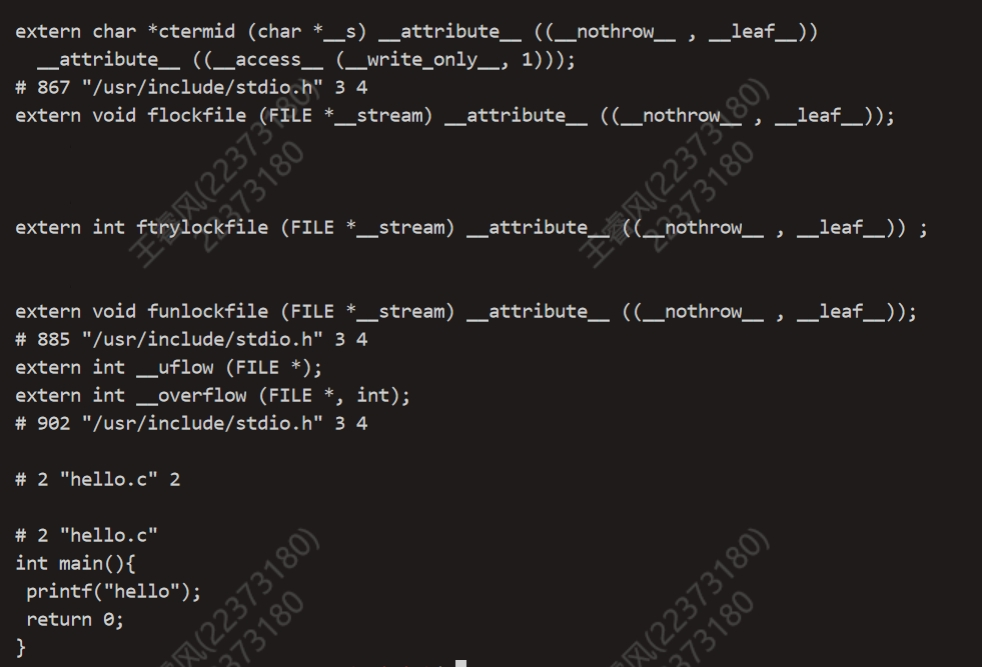
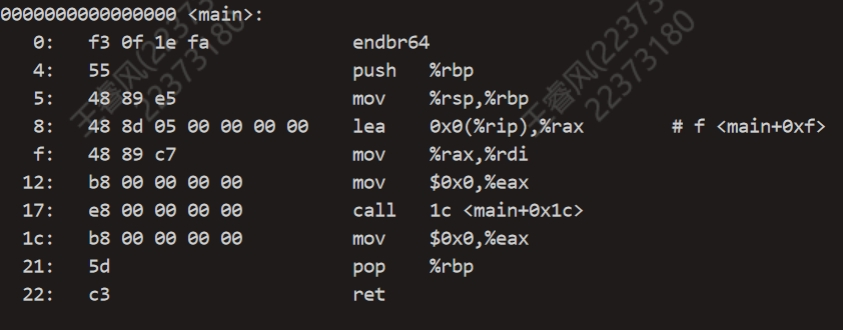
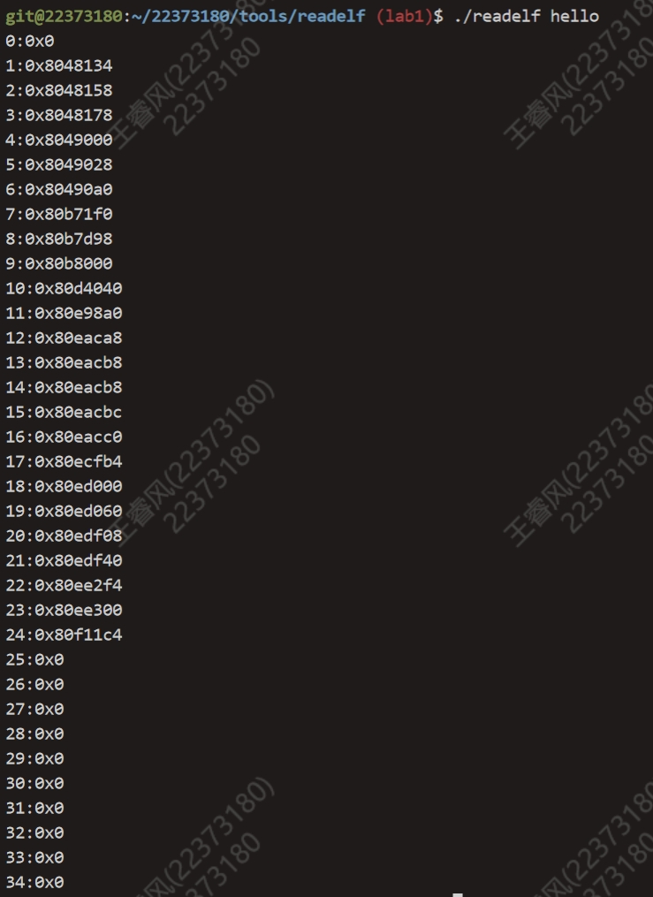
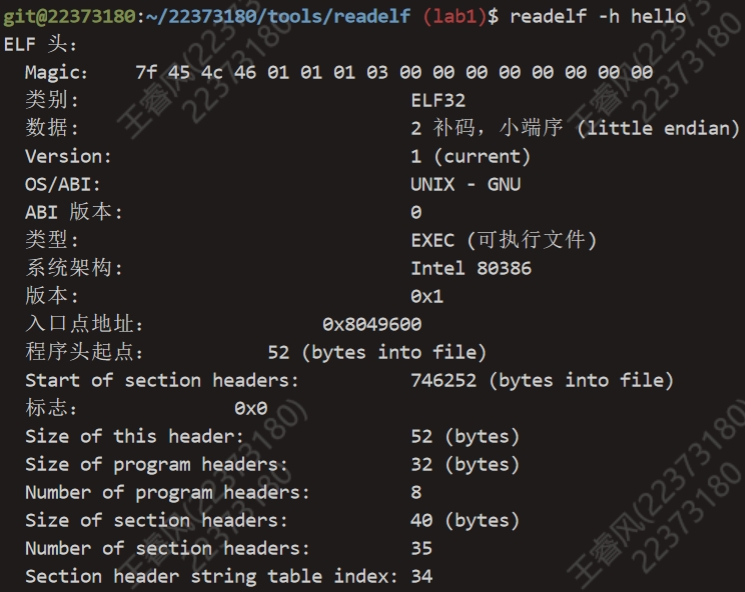
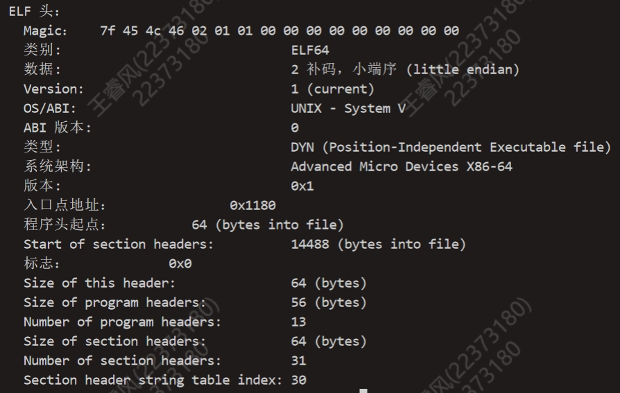

BUAA_OS_Lab1
一、实验思考题
Thinking 1.1
请阅读 附录中的编译链接详解，尝试分别使用实验环境中的原生x86 工具 链（gcc、ld、readelf、objdump 等）和 MIPS 交叉编译工具链（带有 mips-linux-gnu-前缀），重复其中的编译和解析过程，观察相应的结果，并解释其中向objdump传入的参数的含义。
执行:
1 | gcc -E hello.c |
得到结果：C语言的预处理器将头文件的内容添加到了源文件中

执行:
1 | gcc -c hello.c |
得到hello.o文件，在对hello.o文件进行反汇编，导入到obj文件中
1 | objdump -DS hello.o > obj |
obj中main函数部分代码如下所示:

执行:
1 | gcc -o hello hello.c |
obj_hello部分结果如图:

objdump传入的第一个参数为需要反编译的文件名, 第二个参数为反编译结果输入到的文件。
Thinking 1.2
尝试使用我们编写的readelf程序，解析之前在target目录下生成的内核ELF文件。
也许你会发现我们编写的readelf程序是不能解析readelf文件本身的，而我们刚 才介绍的系统工具readelf则可以解析，这是为什么呢？（提示：尝试使用readelf-h，并阅读tools/readelf目录下的Makefile，观察readelf与hello的不同）
解析结果:

执行:
1 | readelf -h hello |
结果如图:

执行:
1 | readelf -h ./readelf |
结果如图:

由上可知：hello的文件类型是EXEC(可执行文件)，而readelf的文件类型是DYN(地址独立的可执行文件)，readelf程序本身只能解析可执行文件，所以解析不了readelf文件本身，而系统工具readelf可以解析所有可执行文件，所以可以解析./readelf。
Thinking 1.3
在理论课上我们了解到，MIPS体系结构上电时，启动入口地址为0xBFC00000 （其实启动入口地址是根据具体型号而定的，由硬件逻辑确定，也有可能不是这个地址，但 一定是一个确定的地址），但实验操作系统的内核入口并没有放在上电启动地址，而是按照内存布局图放置。思考为什么这样放置内核还能保证内核入口被正确跳转到？ （提示：思考实验中启动过程的两阶段分别由谁执行。）
因为引导加载程序在初始化虚拟内存系统时，会将内核映像加载到虚拟地址空间的某个位置，并设置相应的页表条目。这样，CPU就可以通过虚拟地址访问内核，之后会执行一个跳转指令，将控制权交给内核的入口点。
二、实验难点
readelf.c文件编写
需要通过教程中的结构体数据类型和变量定义，查表得到节头表的地址、节头数量和大小。
1 | sh_table = (const void *)((char *)binary + ehdr->e_shoff); |
要获得每个节头的地址需要用节头表指针加上index与节头大小的乘积。
1 | shdr = (Elf32_Shdr *)((char *)sh_table + (i * sh_entry_size)); |
补全kernel.lds文件
根据教程格式写即可，注意内核的位置。
init/start.S文件补全
将栈指针指向kernelbase，跳转到mips_init函数即可。
完成vprintfmt()函数
由于vprintfmt()函数的实现方法有很多种，所以在完成这一部分时可以不按照教程代码注释的指引来写。需要注意的是循环的break条件，遇见’\0’需要跳出循环，不然会陷入死循环。还需要注意实现解析各个符号的含义，按照教程来即可。
三、实验体会
本次实验总体而言难度不大，但由于教程写的比较难懂，所以需要多耗费一些时间在教程的阅读和理解上面。同时也需要注意一些细节，容易在细节上出错。

...
...